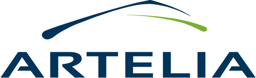
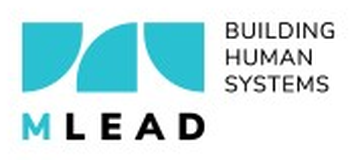
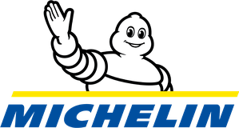
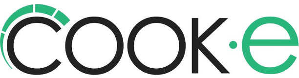
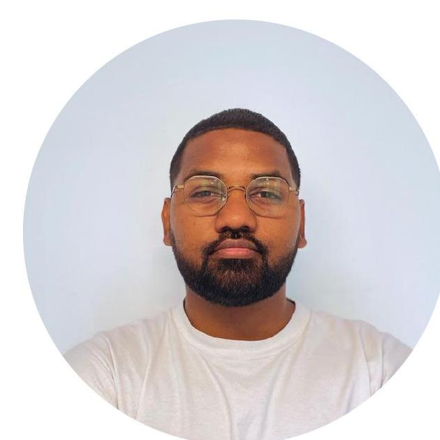
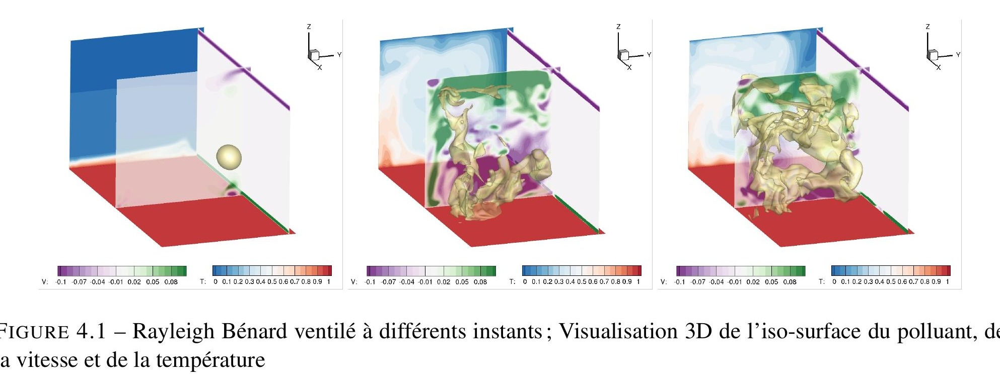
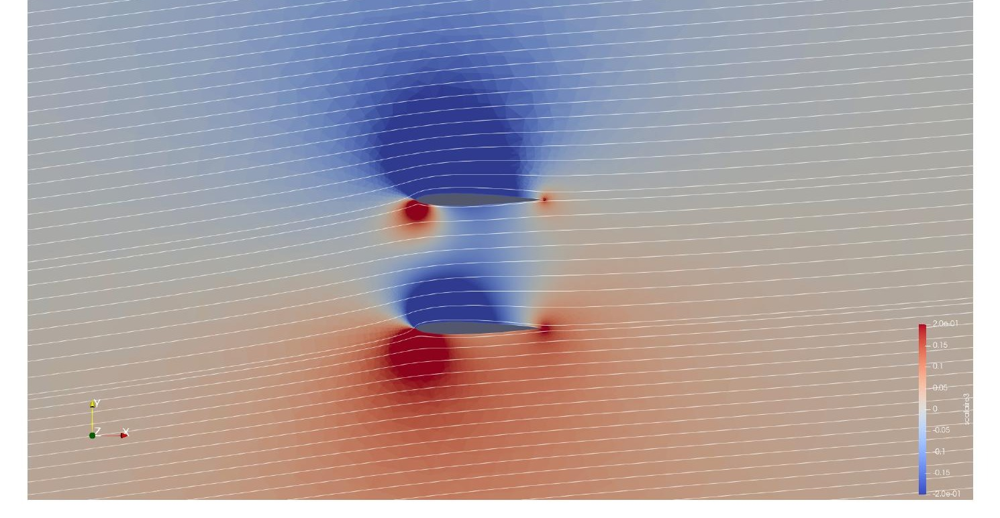
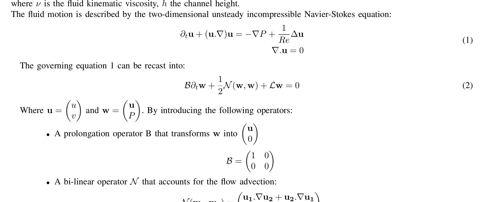
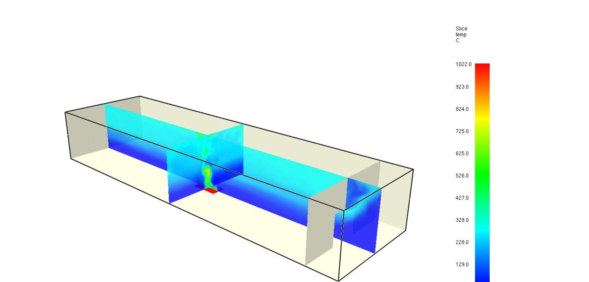

Des modèles numériques fiables pour des décisions d'ingénierie sûres.
J'accompagne bureaux d'études, industriels et startups des problématiques physiques jusqu'aux choix de conception, en passant par la modélisation et la simulation numérique de leurs systèmes fluides et thermiques.



PSA

JORON Joas
J'utilise la modélisation et la simulation numérique avancées pour concevoir des solutions fiables et accompagner les équipes dans la compréhension et l'amélioration de leurs projets. Formé à Sorbonne Université et à l'Institut Polytechnique de Paris, j'allie rigueur scientifique et sens du concret pour transformer des problématiques physiques complexes en recommandations directement exploitables.
Comment je peux vous accompagner
Trois familles d'intervention, mobilisables ponctuellement ou sur toute la durée de votre projet.
- Modélisation numérique par FEM ou FVM, avec choix du logiciel le plus adapté à votre problématique
- Construction de modèles physiques fiables
- Aide à la conception grâce à l'analyse de scénarios
- Restitution synthétique et opérationnelle des résultats
- Validation scientifique des hypothèses et modèles
- Études paramétriques : variantes, sensibilité, leviers d'amélioration
- Comparaison de solutions pour optimiser coûts, délais ou risques
- Synthèses claires pour orienter les choix de votre projet
- Vérification technique sur points complexes
- Vulgarisation scientifique pour décideurs et non-experts
- Support ponctuel en phase d'étude, conception ou R&D
- Structuration et amélioration de workflows numériques
Logiciels & outils maîtrisés
SIMULATION / CFD
- OpenFOAM
- Code_Saturne
- FDS · PyroSim
- FreeFEM
- Basilisk · Gerris
- Tecplot · Paraview
LANGAGES
- Python
- MATLAB
- C / C++
- Fortran
- Bash / Shell
- LaTeX
CAO / DAO
- SolidWorks
- Salomé
- Blender
- Autodesk Inventor
ENVIRONNEMENT
- Linux · HPC
- MPI · OpenMP
- Suite Microsoft
Ce que j'ai livré en mission freelance
Une sélection de projets menés pour des bureaux d'études et industriels, en France et à l'international.
Domaines : foodtech, thermique, ventilation, acoustique — R&D et conception de prototype.
Contexte
COOK-E, spécialisée dans les cuisines autonomes, développe une nouvelle génération de machine de cuisson réduisant le volume interne d'environ 6 m³ à 2 m³. Un wok porté à plus de 300 °C y génère fumées, vapeur d'eau, projections de graisse et humidité à proximité de composants sensibles : l'enjeu est de maîtriser les flux internes.
Ma valeur ajoutée
Montée en compétence rapide sur les phénomènes physiques gouvernant le désenfumage, avec identification des grandeurs caractéristiques et des contraintes techniques dimensionnantes. Développement d'une méthodologie permettant de comparer rapidement différentes configurations et d'identifier les paramètres géométriques les plus influents, puis traduction directe des résultats CFD en choix de conception (dimensionnement du ventilateur, du système de filtration et optimisation acoustique).
Domaines : thermique, aéraulique, désenfumage — infrastructures souterraines de transport.
Contexte
24 km, 24 stations, 10 éléments opérationnels par ligne. Études techniques pour le dimensionnement des infrastructures : modélisation thermique, aéraulique, scénarios de désenfumage, vitesse critique et refroidissement tunnel.
Ma valeur ajoutée
Accélération du workflow de modélisation grâce à des scripts dédiés (génération de géométries complexes, extraction de données, post-traitement), permettant de lancer un grand nombre de simulations en temps réduit.
Domaines : sécurité industrielle, risque incendie.
Contexte
Changement de normes pour aligner l'usine sur les standards internationaux, en vue d'un projet d'agrandissement. Étude CFD vendue 70 k€, prévue sur 3 mois, réalisée en tant que sous-traitant spécialisé en 1,5 mois.
Ma valeur ajoutée
Capacité à absorber un projet normalement prévu sur 3 mois et livré en 1,5 mois, avec des analyses opérationnelles prêtes à l'usage pour un site industriel international — réduction massive des coûts sans compromis sur la qualité scientifique.
Étude aéraulique du système de ventilation d'un tunnel : écoulements d'air, pertes de charge, dimensionnement.
OpenFOAMSolidWorksSécurité incendie d'une usine de stockage de batteries : scénarios incendie, sprinklage, détection fumée.
FDSPythonProjets universitaires
Une sélection de mes travaux académiques, illustrant mon approche scientifique de la modélisation numérique. Cliquez sur une carte pour consulter le rapport complet.

Voir le rapport PDFStage — Dispersion de polluants pathogènes en écoulement ventilé
Laboratoire Interdisciplinaire des Sciences du Numérique (LISN), encadrement Anne Sergent & Yann Fraigneau. Simulation CFD (code Sunfluidh) de la dispersion d'agents pathogènes dans une cellule de Rayleigh-Bénard ventilée, en s'appuyant sur le modèle de Wells-Riley pour évaluer le risque de contamination aéroportée en espace clos.
SunfluidhPythonConvection turbulente
Voir le rapport PDFMécanique du vol — Profils NACA & condition de Kutta
Projet réalisé en binôme (avec Ayoub Sari), encadrement ONERA. Simulation de l'écoulement potentiel et visqueux autour de profils NACA sous FreeFEM : portance, circulation, rôle de la condition de Kutta au bord de fuite, comparaison à la théorie des profils minces.
FreeFEMParaViewPython
Voir le rapport PDFRéduction de modèle — Ondes de Tollmien-Schlichting
Projet réalisé en binôme (avec Ayoub Sari), évalué par Denis Sipp (ONERA). Modélisation d'une couche limite laminaire perturbée (Navier-Stokes linéarisées, DNS sous FreeFEM++), puis réduction de modèle par décomposition POD/SVD et projection de Galerkin, comparée à la simulation complète.
FreeFEM++POD / SVDPython
Voir le rapport PDFStage de fin d'études — Optimisation des systèmes d'extraction de fumée
Artelia, encadrement Poeiti Dorado & Pierre Carlotti. Analyse de l'application industrielle du code CFD incendie FDS : validation sur cas expérimentaux (Hamins et al.), puis optimisation 2D/3D du profil d'extraction de fumée pour le désenfumage d'un quai de gare.
FDSSmokeviewPythonUne tarification claire, adaptée à votre besoin
Chaque mission est différente : je vous propose systématiquement un devis détaillé avant de démarrer, avec une transparence totale sur les livrables.
Adapté aux missions d'étude et projets long-terme.
- Facturation mensuelle au jour travaillé
- Accès à vos logiciels & clusters si nécessaire
- Transparence totale sur les livrables
Adaptés aux urgences, à la R&D et au développement d'outils.
- Modélisation 3D / maillage / simulation
- Pré / post-traitement automatisé
- Débogage de codes scientifiques
- Licences logicielles et coûts HPC inclus
Avant de me contacter
Les réponses aux questions les plus courantes sur mon fonctionnement en freelance.
Comment se déroule une première prise de contact ?
Vous décrivez votre besoin via le formulaire ci-dessous. Je reviens vers vous sous 24 à 48h ouvrées pour convenir ensemble d'un créneau d'échange téléphonique ou en visio, sans engagement. C'est seulement après ce premier échange qu'un devis détaillé vous est proposé.
Travaillez-vous à distance ou sur site ?
Les deux : la majorité des missions (modélisation, simulation, post-traitement) se prêtent bien au travail à distance. Je peux aussi me déplacer ponctuellement pour des réunions de cadrage ou de restitution, en France comme à La Réunion.
Pourquoi le TJM n'est-il pas affiché sur le site ?
Chaque mission a un périmètre différent (durée, outils, urgence, accès à des licences ou du calcul HPC). Je préfère donc établir un devis détaillé et transparent après avoir compris votre besoin, plutôt qu'afficher un tarif générique qui ne reflèterait pas la réalité du projet.
Quels types de missions acceptez-vous ?
Études ponctuelles, missions longue durée (régie ou forfait) et interventions urgentes. Cela va de l'étude CFD complète au développement d'un script de post-traitement ou au débogage d'un code scientifique existant.
Mes données et mon projet restent-ils confidentiels ?
Oui. Je peux signer un accord de confidentialité (NDA) avant tout échange technique détaillé. Les études de cas présentées sur ce site ne mentionnent que des informations déjà publiques ou validées avec les clients concernés.
Sous quel délai puis-je espérer une réponse ?
Je réponds à toutes les demandes sous 24 à 48h ouvrées. Pour les besoins urgents (dépannage, échéance serrée), précisez-le dans le message : je priorise ces demandes.
Discutons de votre projet
Décrivez votre besoin ci-contre : je reviens vers vous pour confirmer personnellement un créneau d'échange, sans engagement.
- 1 Réponse sous 24 à 48h ouvrées
- 2 Chaque rendez-vous est confirmé manuellement par mes soins
- 3 Premier échange (téléphone ou visio) sans engagement